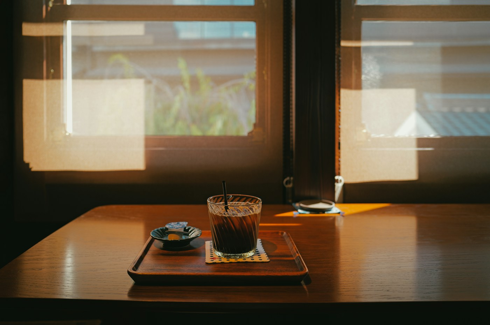

LAMPY
生活册
窗边的家 · 创建者视角
只展示工作册。外部收到的成品不加入这里。
轻轻开始
新建一册
一些日子
册名
有几个下午，想放在一起。
开篇 · 可以留空
不需要选封面、分类或逐页排版。上移／下移／移出不改原记录。
收到一册生活
用 Lampy 打开

窗边的一些日子
进入只读阅读样本阅读、听声音、看纸页。
第一版阅读器在Lampy App里；本页只是流程研究。
阶段 A 静态同屏稿 · 不是真实家庭、文件打开、保存或付费功能
LAMPY
窗边的家 · 创建者视角
只展示工作册。外部收到的成品不加入这里。
轻轻开始
册名
开篇 · 可以留空
不需要选封面、分类或逐页排版。上移／下移／移出不改原记录。
收到一册生活

阅读、听声音、看纸页。
第一版阅读器在Lampy App里；本页只是流程研究。